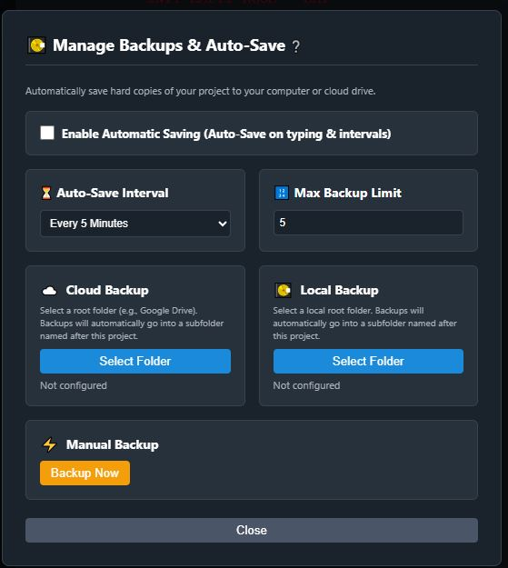
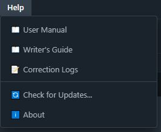
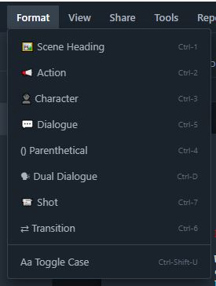
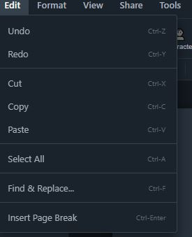

1. Author Setup
Before you begin collaborating, set up your personal Author Profile. Navigate to your profile settings to input your name and select a custom Revision Color.
Your custom color will be used to generate color-coded asterisks whenever you make revisions to a script, ensuring everyone in your writers' room knows exactly who contributed what.

2. Manage Backups
XenoScript features an aggressive, automated backup system to ensure your work is never lost. The Manage Backups window allows you to browse all the automatic snapshots taken while you write.
If you ever need to undo a major structural change or recover a deleted scene, simply locate a timestamped snapshot and roll your script back to safety.

3. Configure Shared Folder
Writing with a partner? You can configure a Shared Folder to act as your collaborative workspace. Set this up using a local network drive or a cloud-synced directory (like Dropbox or Google Drive).
Once configured, XenoScript handles file locking and live updates so you and your co-authors can safely edit in tandem without overwriting each other's work.

4. Set Google API Key
XenoScript's AI features operate on a secure Bring Your Own Key (BYOK) model. We never store your scripts or use them to train models.
To enable the AI critique partner, open the Help/Settings menu and paste your personal Google Gemini API key. Once set, you can query the AI for objective, constructive feedback on your scenes.

5. Format Colors
Reduce eye strain and personalize your writing interface. The Format menu lets you heavily customize the syntax highlighting colors for different script elements.
Assign distinct colors to Scene Headings, Action lines, Characters, and Dialogue so you can visually parse your screenplay structure at a glance.

6. Edit Hotkeys
Speed is everything when you're in the zone. XenoScript allows you to customize your keyboard shortcuts to fit your existing muscle memory.
Navigate to the Edit menu to bind keys for quick actions like adding new scenes, toggling character names, or firing off quick formats without ever reaching for your mouse.
